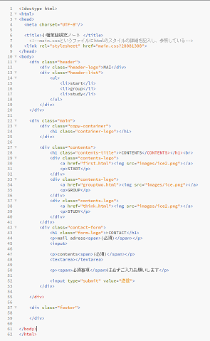
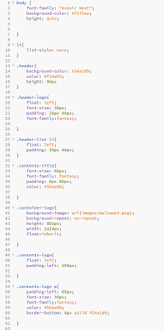
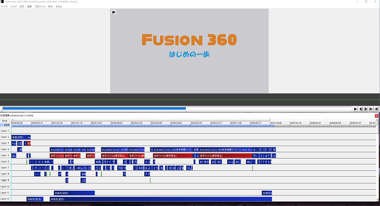

なんか自分のページすごいダサ…と思い、ちょっと調べてみることに
自分のメモ程度に記載
〇背景グラデーション
background: liner-gradient(数字deg, #カラーコード, #カラーコード);
〇文字の位置
text-align: center or left or right;
〇トップの画面を変えました


Illustratorを使ってみた

飛行機やOの中の雲はペンツールと図形ツールを使用
背景グラデーションにすればよかった
〇戦争とは何か 多湖淳 中公新書
〇レイシズム ルース・ベネディクト、阿部大樹訳 講談社学術文庫
→今の世界情勢と関連があるような内容なので興味深かった
〇全体性と無限 エマニュエル・レヴィナス 藤岡俊博訳 講談社学術文庫
aviutlというソフトを使用

基本機能でも十分できるしスクリプトも配布されていたりするので便利です
自分にないものを他人へ求めてしまう心理 そこから人が何を求めているのか研究しものづくり、デザインを行う
って思ってたけど、cssとかhtmlをやっていたら、もっといろんなことがしてみたいと思ったのでpythonを勉強し始めました
まだ何ができるのかわからないので漠然としていますが、アプリなども作ってみたいと思います